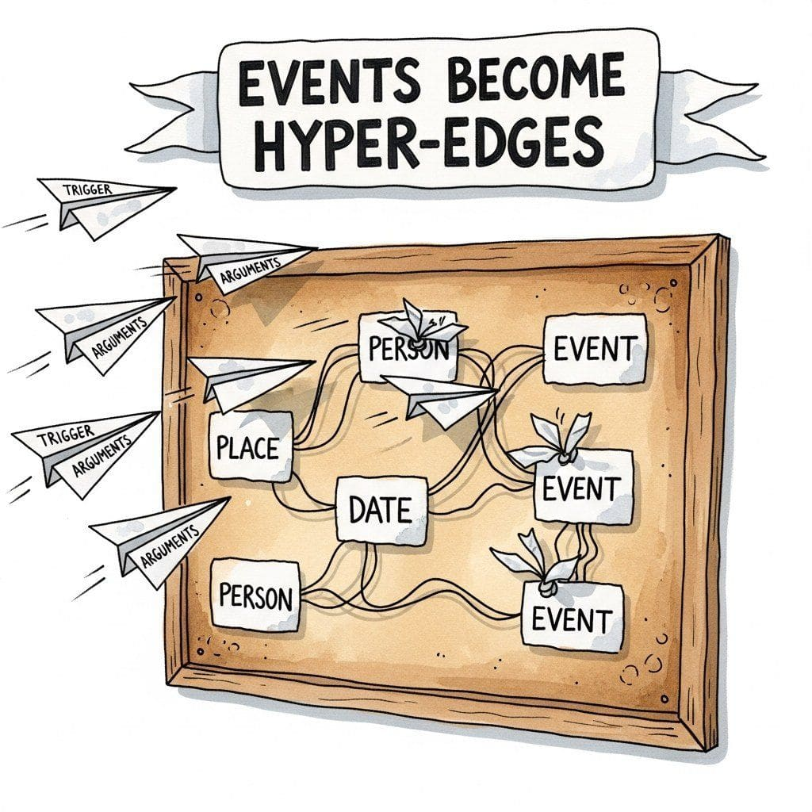
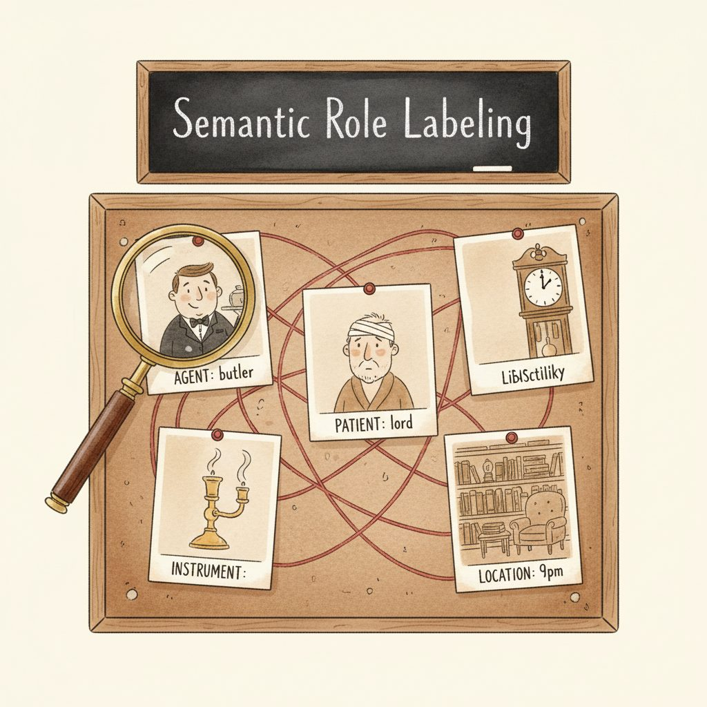

"spaCy does a thousand documents per second for free; the LLM does one per second for money. The trick of production IE is knowing which document deserves which."
Lexica, Stubbornly Classical NLP Agent
This section weaves together four IE sub-topics that ultimately feed a single document-understanding pipeline: spaCy NER (classical, fast, fixed entity types), Open IE with Stanford OpenIE, REBEL, and LLM-based variants (schema-free subject-relation-object triples), event extraction (triggers with typed argument roles), and temporal IE (TimeML, SUTime/HeidelTime, LLM timeline reasoning). The triples and events these tools produce then assemble into knowledge graphs, where entities become nodes and relations become edges. The recurring theme: classical tools handle the high-volume, well-defined parts at zero marginal cost; LLMs handle implicit relations, normalization, and novel schemas.
Prerequisites
This section assumes the information-extraction landscape from Section 34.1, the basic token-classification vocabulary from Section 1.3, and familiarity with the spaCy and Hugging Face pipeline interfaces from Section 12.1.
For a production-ready IE pipeline, the canonical thinnest stack is four libraries: spaCy (en_core_web_trf) for fast classical NER and tokenization, Pyserini for retrieval-flavored IE over a document corpus, Instructor (Pydantic-validated LLM output) for typed LLM extraction of relations and events, and REBEL (fine-tuned BART) for high-throughput relation extraction with Wikidata-style relation types. This four-piece stack covers entity recognition, retrieval, structured LLM output, and relation extraction without pulling in heavier frameworks; everything composes through plain Python.
Show code
# Two-step IE pipeline: spaCy for fast NER, Instructor for typed LLM extraction.
import spacy, instructor
from pydantic import BaseModel
from openai import OpenAI
nlp = spacy.load("en_core_web_trf")
client = instructor.from_openai(OpenAI())
class Event(BaseModel):
actor: str
action: str
target: str
text = "Alice met Bob at Acme Corp in Berlin on 2024-03-01."
ents = [(e.text, e.label_) for e in nlp(text).ents]
event = client.chat.completions.create(
model="gpt-4o-mini",
response_model=Event,
messages=[{"role": "user", "content": f"Extract one event from: {text}"}],
)
34.2.1 Classical IE with spaCy
Named entity recognition was one of the first NLP tasks to reach "good enough" accuracy in the 1990s, and spaCy's modern transformer-based models (en_core_web_trf) can process over a thousand documents per second. Meanwhile, achieving the same task with an LLM API call takes roughly 1 second per document and costs money. Sometimes the 30-year-old approach is still the right one.
spaCy's en_core_web_trf model processes roughly a thousand documents per second on a modern GPU (with batching) or hundreds per second on CPU. An LLM API call for the same NER task runs at roughly 1 document per second (limited by network round-trip plus 200ms-2s of inference latency). That is a ~1,000× throughput gap. To process 1 million documents: spaCy finishes in ~1,000 seconds (about 17 minutes); the LLM takes ~11.6 days of wall time (or fewer with parallel API calls, at proportional cost). This is why classical NER remains the default first pass even when an LLM is also available.
spaCy remains the gold standard for production NER when you need speed and reliability on well-defined entity types. Its tokenization pipeline handles the text preprocessing that makes span-based entity recognition possible. Its transformer-based models achieve state-of-the-art accuracy on standard benchmarks, and its pipeline architecture makes it easy to add custom entity types through training or rule-based matching. Code Fragment 34.2.10 shows this approach in practice.
For the classical column of Table 34.1.1, the production default is spaCy 3.7+ with its transformer-based pipeline. en_core_web_trf wraps a RoBERTa-base encoder behind the standard spaCy Doc.ents API: you get state-of-the-art F1 on OntoNotes entities without writing a training loop. Pair it with spacy[transformers,cuda12x] on a GPU and throughput stays in the multi-thousand-docs-per-second range.
Show code
pip install "spacy[transformers,cuda12x]"
python -m spacy download en_core_web_trf
import spacy
nlp = spacy.load("en_core_web_trf")
doc = nlp("Alice met Bob at Acme Corp in Berlin on 2024-03-01.")
for ent in doc.ents:
print(ent.text, ent.label_)en_core_web_trf with en_core_web_lg for CPU-only deployments that want lower latency over absolute accuracy.Code Fragment 34.2.3 runs spaCy's transformer-based NER pipeline on a financial news snippet, grouping extracted entities by type.
# Use spaCy for classical named entity recognition
# Extracts persons, organizations, dates, and locations at minimal cost
import spacy
from spacy import displacy
from collections import defaultdict
# Load a pre-trained transformer model
nlp = spacy.load("en_core_web_trf")
text = """
Apple Inc. announced today that CEO Tim Cook will present the company's
quarterly earnings at their headquarters in Cupertino, California on
January 30, 2025. Revenue is expected to exceed $120 billion, driven
by strong iPhone 16 sales across Europe and Asia.
"""
doc = nlp(text)
# Extract entities with their labels and positions
entities = []
for ent in doc.ents:
entities.append({
"text": ent.text,
"label": ent.label_,
"start": ent.start_char,
"end": ent.end_char,
})
# Group by entity type (PERSON, ORG, DATE, etc.) for readable output.
by_type = defaultdict(list)
for entity in entities:
by_type[entity["label"]].append(entity["text"])
print("Extracted Entities:")
print("=" * 50)
for label, values in sorted(by_type.items()):
print(f" {label:12s}: {', '.join(values)}")
print(f"\nTotal: {len(entities)} entities across {len(by_type)} types")Code Fragment 34.2.10a demonstrates the complementary LLM-based approach using the BAML framework for structured event extraction, where b.ExtractEvents() handles prompt construction, LLM invocation, and Pydantic validation in one call.
# Schema is declared in extract_events.baml (not Python).
# BAML compiles the .baml file into a typed Python client where
# ExtractedEvent has fields: event_type (enum), description (str),
# participants (list[str]), date and monetary_value (optional str).
from baml_client import b
from baml_client.types import ExtractedEvent
def summarize_event(event: ExtractedEvent) -> None:
print(f"Type: {event.event_type}")
print(f"Description: {event.description}")
print(f"Participants: {', '.join(event.participants)}")
print(f"Date: {event.date}")
print(f"Value: {event.monetary_value}")
article = """
Microsoft announced on March 15, 2025, that it has completed its
$2.1 billion acquisition of cybersecurity startup CyberShield AI.
The deal, first reported in January, brings 450 employees and
several enterprise security products into Microsoft's Azure division.
CEO Satya Nadella called the acquisition transformative for the
company's cloud security strategy.
"""
# BAML handles prompt construction, LLM call, and type validation
events: list[ExtractedEvent] = b.ExtractEvents(article)
for event in events:
summarize_event(event)LLMs can hallucinate entities that do not appear in the source text. Always implement a grounding check that verifies extracted entities against the original document. A simple substring match catches most hallucinations. For more robust grounding, use fuzzy matching or semantic similarity to handle paraphrases and abbreviations.
34.2.2 Open Information Extraction


Traditional relation extraction requires a predefined schema of relation types (e.g., works_at, located_in, acquired_by). Open Information Extraction (Open IE) removes this constraint entirely, extracting arbitrary (subject, relation, object) triples from text without any schema. This makes Open IE invaluable for exploratory analysis, knowledge graph bootstrapping, and domains where the set of possible relations is unknown or too large to enumerate in advance.
34.2.2.1 Classical Open IE Systems
Stanford OpenIE (Angeli et al., 2015) pioneered the modern approach to schema-free extraction. It decomposes complex sentences into short, self-contained clauses using natural logic, then extracts triples from each clause. For example, the sentence "Tim Cook, who became CEO in 2011, leads Apple from Cupertino" yields three triples: (Tim Cook; became CEO; in 2011), (Tim Cook; leads; Apple), and (Apple; located in; Cupertino). The system processes text at high speed with no training data required, but it struggles with implicit relations and complex syntactic constructions.
REBEL (Cabot and Navigli, 2021) takes a different approach by framing relation extraction as a sequence-to-sequence problem. A fine-tuned BART model generates linearized triples directly from input text, enabling it to capture both explicit and implicit relations. REBEL supports over 200 relation types from Wikidata and can be fine-tuned on custom relation schemas. It bridges the gap between closed and open IE by learning from structured knowledge bases while retaining the flexibility to extract novel relation patterns.
Open IE is the foundation of automated knowledge graph construction. Each extracted triple becomes a candidate edge in a knowledge graph: subjects and objects map to nodes, and relations map to labeled edges. When combined with entity linking (covered in Section 31.5), Open IE triples can be grounded to canonical entities, enabling structured querying over unstructured text corpora.
34.2.2.2 LLM-Based Open IE with Structured Output
LLMs bring two significant advantages to Open IE: they understand context deeply enough to extract implicit relations, and they can normalize relation phrases into consistent, canonical forms. A classical Open IE system might extract both "is headquartered in" and "has its main office in" as separate relation types; an LLM can recognize these as the same headquartered_in relation and normalize accordingly.
# LLM-based Open Information Extraction with structured output
# Extracts (subject, relation, object) triples without a predefined schema
from pydantic import BaseModel, Field
from openai import OpenAI
import instructor
client = instructor.from_openai(OpenAI())
class Triple(BaseModel):
subject: str = Field(description="The entity performing or described by the relation")
relation: str = Field(description="Normalized relation in snake_case (e.g., acquired_by)")
object: str = Field(description="The target entity or value of the relation")
confidence: float = Field(ge=0.0, le=1.0, description="Extraction confidence")
source_span: str = Field(description="The text span supporting this triple")
class OpenIEResult(BaseModel):
triples: list[Triple]
def extract_open_ie(text: str) -> OpenIEResult:
"""Run instructor-validated Open IE over a short passage."""
return client.chat.completions.create(
model="gpt-4o",
response_model=OpenIEResult,
messages=[
{"role": "system", "content": (
"Extract all factual (subject, relation, object) triples from the text. "
"Normalize relation names to snake_case. Include the source text span "
"that supports each triple. Only extract relations explicitly stated or "
"directly implied by the text."
)},
{"role": "user", "content": text},
],
max_retries=2,
)
text = """
Anthropic, founded by Dario and Daniela Amodei in 2021, raised $2 billion
from Google in late 2023. The San Francisco-based company developed Claude,
which competes with OpenAI's ChatGPT. Anthropic employs over 1,000
researchers and engineers focused on AI safety.
"""
result = extract_open_ie(text)
print(f"Extracted {len(result.triples)} triples:\n")
for t in result.triples:
print(f" ({t.subject}; {t.relation}; {t.object})")
print(f" confidence={t.confidence:.2f} span=\"{t.source_span}\"")
| Dimension | Stanford OpenIE | REBEL | LLM-Based Open IE |
|---|---|---|---|
| Schema required | None | Optional (Wikidata types) | None |
| Relation normalization | None (raw phrases) | Partial (learned types) | Strong (LLM normalizes) |
| Implicit relations | Weak | Moderate | Strong |
| Latency per document | <50ms | 50-200ms | 500ms-2s |
| Cost per document | Free | Free (local GPU) | $0.005-0.03 |
| Hallucination risk | None | Low | Moderate |
| Best for | High-volume, explicit facts | Knowledge graph population | Complex, implicit relations |
Every structured extraction task implicitly answers the question: "Who did what to whom, when, where, and why?" This is exactly the question that Semantic Role Labeling (SRL) was designed to answer. SRL identifies the predicate (the action or event) in a sentence and assigns semantic roles to its arguments: Agent (who performed the action), Patient (who was affected), Instrument (what tool was used), Location (where it happened), and Temporal (when it happened).
Classical SRL resources include PropBank, which defines verb-specific role sets (Arg0, Arg1, Arg2, etc.) grounded in syntactic frames, and FrameNet, which organizes predicates into semantic frames with named roles (Buyer, Seller, Goods, Price for a commercial transaction). Tools like AllenNLP's SRL model provide pretrained PropBank-based labeling that runs in milliseconds per sentence.
When an LLM extracts structured events with typed arguments (buyer, seller, price, date), it is implicitly performing SRL without the formal linguistic machinery. Understanding this connection matters for two reasons. First, classical SRL tools can serve as fast, cheap pre-processors that identify predicate-argument structures before an LLM performs the more expensive reasoning over those structures. Second, SRL annotations from PropBank and FrameNet provide excellent few-shot examples for teaching LLMs to extract domain-specific semantic roles, because the role structure transfers across domains even when the specific labels change. The event extraction subsection below demonstrates how these semantic roles appear in practice under the labels of event arguments.
34.2.2.3 Event Extraction
Event extraction goes beyond entity and relation extraction to identify structured representations of what happened. Each event consists of a trigger (the word or phrase indicating the event), an event type, and a set of arguments filling specific roles. For example, in the sentence "Google acquired Fitbit for $2.1 billion in January 2021," the trigger is "acquired," the event type is ACQUISITION, and the arguments include the buyer (Google), the target (Fitbit), the price ($2.1 billion), and the date (January 2021).
Event Ontologies and Benchmarks
The ACE (Automatic Content Extraction) program defined 33 event types across eight categories: Life, Movement, Transaction, Business, Conflict, Contact, Personnel, and Justice. The ERE (Entities, Relations, Events) annotation standard extended ACE with lighter guidelines and broader coverage. These ontologies provide the foundation for supervised event extraction models, but they cover only a fraction of real-world event types. Domain-specific applications (financial events, clinical events, cybersecurity incidents) typically require custom event schemas.
LLM-Based Event Extraction
LLMs excel at event extraction because they can handle arbitrary event schemas defined in the prompt, reason about implicit arguments (the buyer in a passive construction like "Fitbit was acquired"), and resolve temporal expressions to structured dates. The following code fragment demonstrates extracting structured events from a news article, including timeline construction from multiple event mentions.
# LLM-based event extraction with timeline construction
# Extracts structured events and builds a chronological timeline
from pydantic import BaseModel, Field
from typing import Optional
from enum import Enum
from openai import OpenAI
import instructor
client = instructor.from_openai(OpenAI())
class EventType(str, Enum):
ACQUISITION = "acquisition"
FUNDING = "funding_round"
PRODUCT_LAUNCH = "product_launch"
PARTNERSHIP = "partnership"
LEADERSHIP_CHANGE = "leadership_change"
LEGAL_ACTION = "legal_action"
IPO = "ipo"
LAYOFF = "layoff"
EARNINGS = "earnings_report"
OTHER = "other"
class EventArgument(BaseModel):
role: str = Field(description="Semantic role: buyer, seller, amount, product, etc.")
value: str = Field(description="The entity or value filling this role")
entity_type: Optional[str] = Field(
default=None, description="Entity type if applicable: ORG, PERSON, MONEY, DATE"
)
class ExtractedEvent(BaseModel):
trigger: str = Field(description="The word or phrase indicating the event")
event_type: EventType
arguments: list[EventArgument]
date: Optional[str] = Field(default=None, description="ISO date if identifiable")
sentence: str = Field(description="The source sentence containing the event")
class EventExtractionResult(BaseModel):
events: list[ExtractedEvent]
timeline_summary: str = Field(
description="One-paragraph chronological summary of all events"
)
def extract_events(article: str) -> EventExtractionResult:
"""One LLM call returns typed events plus a timeline string."""
return client.chat.completions.create(
model="gpt-4o",
response_model=EventExtractionResult,
messages=[
{"role": "system", "content": (
"Extract all business events from the article. For each event, identify "
"the trigger word, classify the event type, extract all arguments with "
"their semantic roles, and resolve dates to ISO format (YYYY-MM-DD) where "
"possible. Then write a chronological timeline summary."
)},
{"role": "user", "content": article},
],
max_retries=2,
)
article = """
In a dramatic week for the tech industry, Nvidia announced record quarterly
revenue of $22.1 billion on February 21, 2024, driven by surging AI chip
demand. Two days later, the EU filed an antitrust lawsuit against Apple over
its App Store policies, seeking $38 billion in penalties. Meanwhile, Microsoft
laid off 1,900 employees from its gaming division following the Activision
Blizzard acquisition. On February 26, Stripe announced a partnership with
Amazon to process payments for third-party sellers, a deal expected to
generate $500 million in annual transaction volume.
"""
result = extract_events(article)
for i, event in enumerate(result.events, 1):
print(f"Event {i}: {event.event_type.value}")
print(f" Trigger: \"{event.trigger}\"")
print(f" Date: {event.date}")
for arg in event.arguments:
print(f" {arg.role:12s}: {arg.value} ({arg.entity_type or 'N/A'})")
print()
print("Timeline:")
print(f" {result.timeline_summary}")
Event extraction is the bridge between information extraction and temporal reasoning. By extracting events with resolved dates and participant roles, you can construct timelines, detect causal chains (Event A triggered Event B), and answer temporal questions ("What happened between the acquisition and the layoffs?"). This capability is critical for RAG systems (Section 32.3) that need to reason about sequences of events rather than isolated facts.
34.2.2.4 Temporal Information Extraction
Temporal information extraction builds on event extraction by focusing specifically on the time dimension: when did events happen, in what order, and how do they relate to each other chronologically? While event extraction captures individual occurrences with their participants and dates, temporal IE constructs coherent timelines that reveal causal sequences, durations, and overlapping events across a document or document collection.
Classical temporal IE relies on specialized tools and annotation standards. TimeML is the ISO standard markup language for temporal expressions, events, and temporal relations in text. Tools like SUTime (Stanford) and HeidelTime normalize temporal expressions ("last Tuesday," "Q3 2024," "two weeks after the merger") into ISO 8601 dates. These rule-based normalizers are remarkably accurate for well-formed temporal expressions and run at negligible computational cost, making them ideal candidates for the classical side of a hybrid pipeline.
LLMs complement these tools by handling the harder aspects of temporal reasoning: resolving ambiguous references ("shortly after," "during the crisis"), inferring temporal order from discourse structure when explicit dates are absent, and constructing narrative timelines that synthesize events scattered across long documents. The following code fragment demonstrates an LLM-based timeline extraction pipeline that combines classical temporal normalization with LLM reasoning.
# Temporal information extraction: build a timeline from a document
# Combines classical date normalization with LLM temporal reasoning
from openai import OpenAI
import json
client = OpenAI()
def extract_timeline(document: str, domain: str = "general") -> dict:
"""Extract a chronological timeline of events from a document."""
response = client.chat.completions.create(
model="gpt-4o",
messages=[
{"role": "system", "content": f"""You are a temporal information
extraction system for {domain} documents. Extract all events and
temporal expressions, then construct a timeline.
For each event, provide:
- "date": ISO 8601 date or date range (use "unknown" if not stated)
- "event": concise description of what happened
- "participants": list of entities involved
- "temporal_relation": relationship to the previous event
(e.g., "after", "before", "simultaneous", "during", "unrelated")
- "confidence": float 0.0 to 1.0 for the temporal placement
Return JSON with "events" (list sorted chronologically) and
"timeline_summary" (a one-paragraph narrative of the timeline)."""},
{"role": "user", "content": document}
],
temperature=0.1,
response_format={"type": "json_object"}
)
return json.loads(response.choices[0].message.content)
# Example: legal case timeline extraction
legal_doc = """On March 15, 2024, Acme Corp filed a patent infringement
suit against Beta Inc in the Eastern District of Texas. Beta Inc
responded with a motion to dismiss on April 2. Two weeks later, the
court denied the motion and set a discovery deadline for August 30.
During the discovery period, Beta Inc produced 50,000 documents. The
parties attempted mediation in early September but failed to reach a
settlement. Trial is scheduled for January 2025."""
timeline = extract_timeline(legal_doc, domain="legal")
for event in timeline["events"]:
print(f" {event['date']:>12} {event['event']}")
print(f"\nSummary: {timeline['timeline_summary']}")Temporal IE is critical in several domains. Legal document analysis requires constructing case timelines from filings, depositions, and correspondence to establish sequences of events for litigation. Medical record timelines track patient history (symptoms, diagnoses, treatments, outcomes) across clinical notes that span months or years, enabling clinicians to see the full trajectory of care. News event tracking constructs evolving timelines of developing stories, linking related events across sources and detecting when reported timelines conflict. These applications connect directly to the RAG systems in Chapter 32, where temporal reasoning enables queries like "What happened between the filing and the trial?"
Hybrid temporal extraction in practice: The most robust timeline systems use HeidelTime or SUTime to normalize explicit temporal expressions (fast, deterministic, nearly perfect accuracy on well-formed dates), then pass the document with normalized dates to an LLM for resolving relative references and inferring temporal order from context. This hybrid approach avoids wasting LLM tokens on date parsing while leveraging the LLM's reasoning ability for the genuinely hard parts of temporal IE.
34.2.2.5 From Events to Knowledge Graphs
The triples from Open IE and the structured events from event extraction feed naturally into knowledge graphs. Each entity becomes a node, each relation becomes an edge, and each event becomes a hyper-edge connecting multiple entities through their roles. Entity linking (covered in Section 31.5) grounds these entities to canonical identifiers, enabling cross-document queries. For example, a knowledge graph built from financial news might link "MSFT," "Microsoft Corp.," and "the Redmond tech giant" to the same canonical entity, allowing a query like "show all acquisitions by Microsoft in 2024" to aggregate results across hundreds of articles.
Take 100 Reuters news articles. Run spacy.load("en_core_web_lg") NER and extract all PERSON, ORG, GPE entities. Then sample 20 articles by hand-annotation, compute precision and recall, and report the canonical 90-something-percent F1 number per type. Identify two systematic error patterns (e.g., titles like "Dr. X" merged with X, or company-as-person miscategorization).
Answer Sketch
Expected: PERSON F1 around 0.90, ORG F1 around 0.85, GPE F1 around 0.92 on typical news. Common errors: (1) honorifics ("Dr. Smith" tagged as a single PERSON span that includes "Dr."); (2) ambiguous "Twitter" or "Amazon" tagged as ORG even when used as GPE-like geographic markers; (3) Multi-word organizations split into two ORGs. This baseline justifies why a hybrid pipeline pipes ambiguous cases to an LLM rather than ditching spaCy.
Run Stanford OpenIE (via the openie Python wrapper) on the sentence "After acquiring Whole Foods in 2017, Amazon launched a private-label grocery line." Compare the extracted triples against what GPT-4 produces for the same prompt. Identify which system finds the temporal qualifier "in 2017" and explain why.
Answer Sketch
Stanford OpenIE typically produces (Amazon, acquired, Whole Foods) and (Amazon, launched, private-label grocery line), missing the temporal qualifier. GPT-4 produces 4-tuples or quadruples with the date attached. Open IE uses surface-syntactic patterns that strip temporal phrases; LLMs preserve them because they were trained to produce richer structured outputs. This is the canonical case for the hybrid pipeline that follows in Section 34.3.
What's Next?
In the next section, Section 34.3: Hybrid IE Architectures with LLMs, we build on the material covered here.